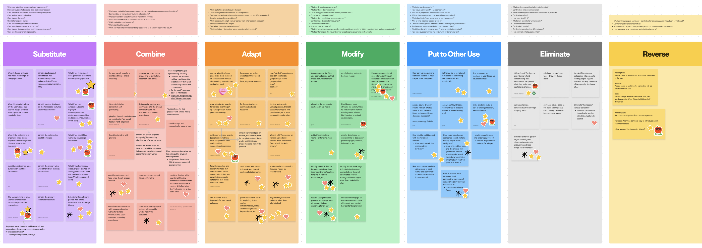
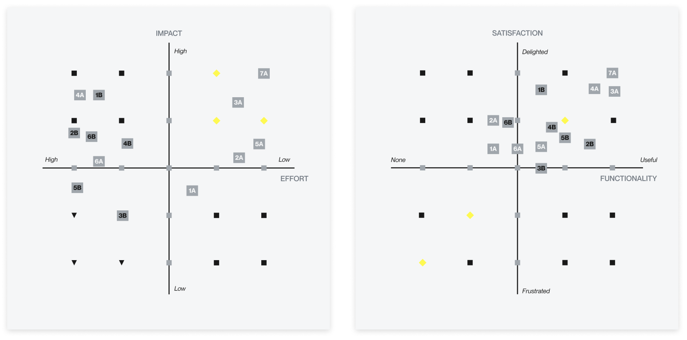
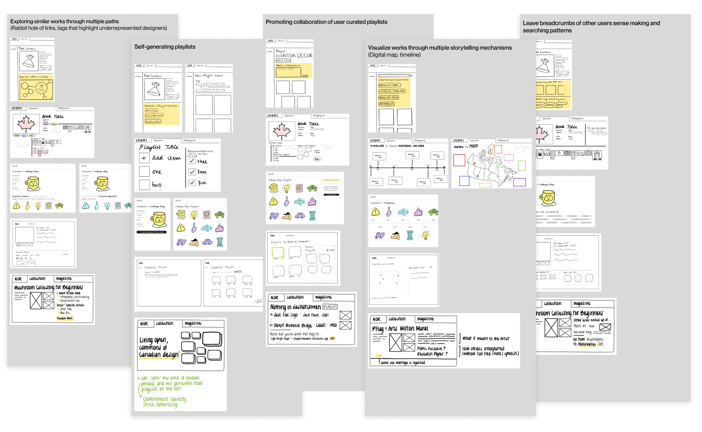
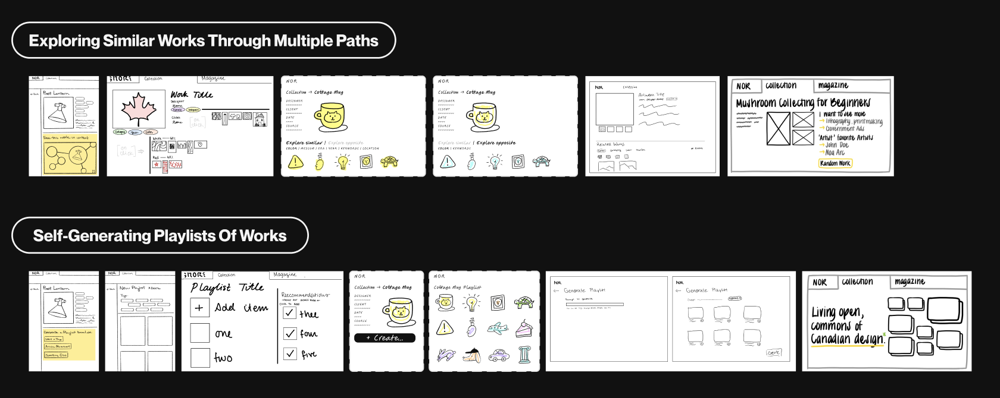
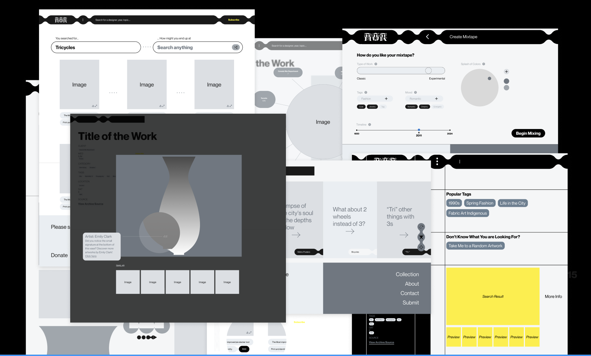
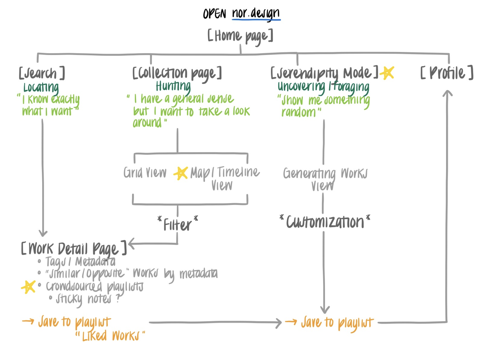
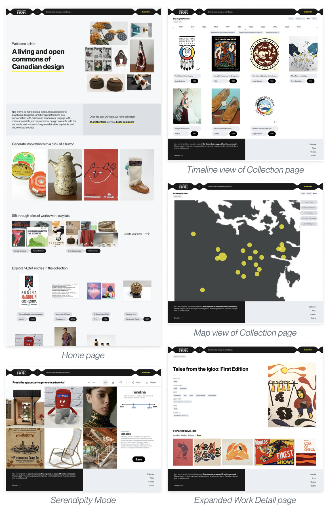
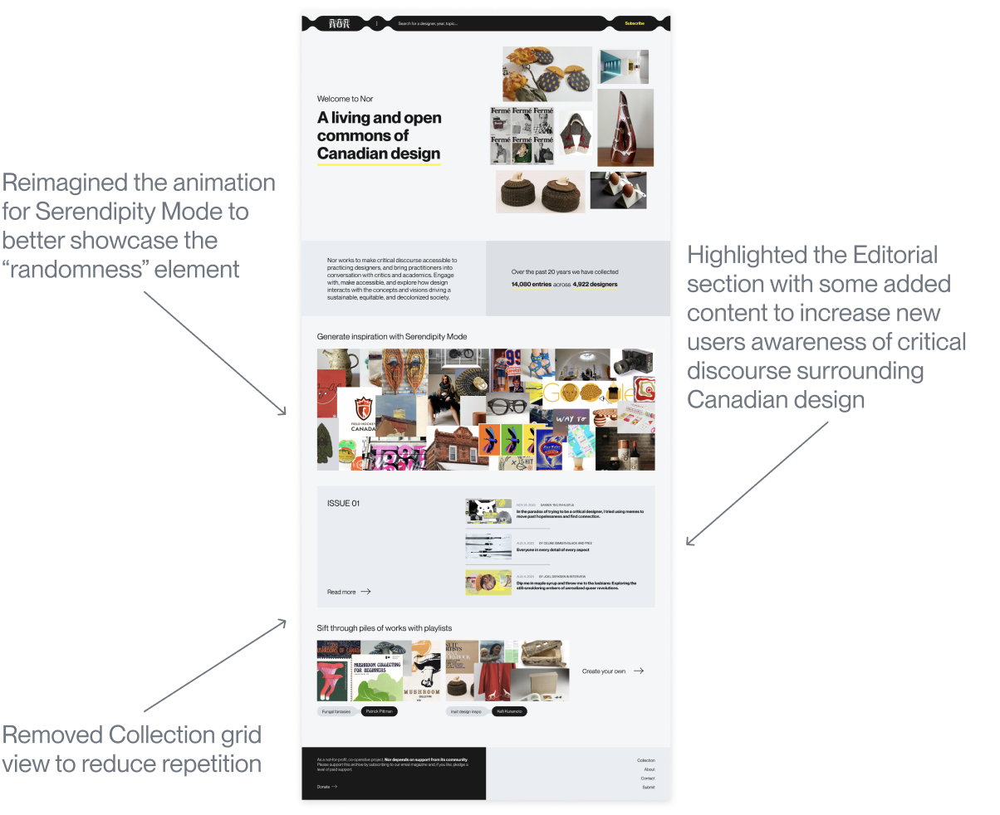

Transforming the user experinece in documenting, preserving, and questioning Canadian material culture
Jan-Apr 2024 (4 months)
Estée Goel, Kelli Kuramoto, Susan Ni, Adriana Poznanski, Nicole Xiang
User Centered Research, UX Design, Web Development
Figma, FigJam
NOR is a living and open commons for design in Canada. It is a not-for-profit, co-operative and collective effort to document, preserve, and question Canadian material culture.
Nor evolved from a 20 year old crowdsourced cultural history platform and design resource, and now aims to be a living design museum. The platform's users include design practitioners, academics, students, librarians, archivists, design theorists, and more.
Our team came up with enhancements that not only modernize the experience of interacting with Nor but also to transform it into a more inclusive, engaging, and educational resource that continues to evolve with its community.
How might we improve the experience of Nor by challenging what a design archive could be?
01 Modernize experience of engaging with digital archives thru interaction design
02 Optimize content organization in Nor for easier navigation and accessibility
03 Enhance Nor’s utility as a practical research tool for diverse users
→ introducing dynamic discovery tools such as Serendipity Mode
→ presenting the collection thru storytelling mechanisms like Map and Timeline
→ inspiring and enriching users through new interactions on the Homepage
01 understand the needs, expectations, & motivations of users exploring archives
02 discover barriers and challenges that users face when exploring digital archives
03 uncover functional attributes that enhance usability and foster site retention
User interviews with members of the Nor network
Contextual inquiry studies with design students new to Nor
Questionnaire distributed to design and HCI communities
Users need to be able to easily recognize the digital archive’s purpose in order to understand it to be a valuable resource for them
→ Users prioritize efficient and customizable content discovery when deciding which digital archive to revisit
→ Facilitating broader contextual exploration is key for improving the experience of browsing an online archive
→ Inclusivity across different creative mediums and viewpoints can enhance the archive's value and relevance to its audience
→ Exploring related works and falling down rabbit holes is a source of delight for users when using digital archives
After synthesizing all of our insights, we identified patterns in the motivations and habits of all the users we interviewed, which translated into three unique discovery modes for Nor users:
"I know exactly what I'm looking for"
Users prioritize efficient and customizable content discovery when deciding which digital archive to revisit
"I have a general sense of what I want, but I want to take a look around"
Facilitating broader contextual exploration is key for improving the experience of browsing an online archive
Exploring related works and falling down rabbit holes is a source of delight for users when using digital archives
“Show me something random and inspiring”
Inclusivity across different creative mediums and viewpoints can enhance the archive's value and relevance to its audience
→ make Nor’s purpose more clear?
→ include a variety of creative mediums and viewpoints?
→ enable broader contextual exploration?
→ nudge users into inspirational rabbit holes?
01 Find what I want, the way I want
02 Explore Canada’s design history
03 Help users create their own meaning
04 Understand the historical significance
05 Visualize other users’ (related) thought patterns
To creatively explore the “jobs” we defined, we implemented the SCAMPER technique—a method that encourages viewing problems through various lenses:
Next, We employed storyboards to visualize and validate the top 15 concepts we voted on, drawing from the wealth of ideas generated during our rapid ideation sessions.
After creating storyboards for these concepts we tested them with five participants to refine our direction and ensure the ideas resonated with potential users.
After synthesizing our Speed Dating Insights, we evaluated the results by plotting each concept on Impact x Effort and Satisfaction x Functionality matrix. This allowed us to easily identify and prioritize valuable features:
To kick off the prototyping stage, we each created paper prototypes of our own individual interpretations of the 5 key concepts we chose to pursue. This allowed us to explore a wide breadth of ideas in a short timeframe
Of these 25 lo-fi prototypes, our clients were most interested in further exploring the following concepts:
01 Our advisor pushed us to think about interaction design basics such as: Layout, Content, Flow, and Intended Outcomes.
02 Our client encouraged us to “break paradigm of serving more content through a card sort” and aim for a “cohesive, innovative punk idea”.
We went back to the drawing board and generated the craziest ideas we could think up for storytelling mechanisms and discovery tools:
In order to not overwhelm our user testers, we chose five ideas to validate and test, with the aim of identifying which best meet our users' needs
We synthesized all of the user feedback from our sessions, and utilized the insights to refine our project scope. We leveraged the different discovery modes uncovered during our research phase to determine which ideas to incorporate into our final high-fidelity prototype, and came up with the following user flow:
We brought our ideas to life with images from real works featured on Nor and adherence to the brand identity:
After showing our client our first iteration, we received valuable feedback regarding the contents and visual design of the Home page. All changes implemented were to ensure users could easily recognize Nor’s purpose and key features
After placing the finishing touches, we finally finished our final prototype!
Returning to our project goals, we believe we've improved the experience of Nor by challenging the idea of what a design archive should be through our final solution:
→ Redesigned NOR's Homepage to clarify the digital archive's purpose and highlight the breadth of features from playlists to editorial articles
→ Integrated new collection views via Timeline and Map, making it easier for “hunters” to find and engage with works in a variety of ways
→ Introduced Serendipity Mode, a dynamic discovery tool for “gathers” to spontaneously explore and gather inspiration
→ Newly revamped Work Detail page with an added related works section to encourage a wider breadth of exploration